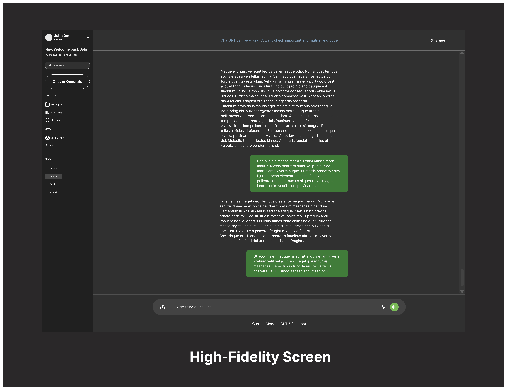

Design System Iteration & Refinement with ChatGPT
A focused redesign of ChatGPT’s active workspace, centered on navigation clarity, action hierarchy, and reducing cognitive load.
This case study looks at how product design decisions can make a complex AI workspace feel clearer, faster, and more intentional to use.
I redesigned ChatGPT’s active workspace around user intent, clearer action hierarchy, and cleaner information architecture. The goal was to reduce redundant entry points, make core actions easier to find, and create a more scalable interface structure for everyday, power, and professional users.
Purpose
ChatGPT is one of the most widely used generative AI chatbots, but its active workspace still presents opportunities for refinement. I focused on how the interface organizes key actions, how users move through the workspace, and how much cognitive effort is required to understand what to do next. Through this redesign, I aimed to reduce redundant entry points, clarify navigation, and create a more scalable structure using a personal design system.
Note: This case study focuses on the active chat workspace only — not onboarding.
Core Issues
- ChatGPT includes multiple sidebar and workspace actions that create unnecessary redundancy.
- The navigation feels more feature-led than user intent-led, making the interface feel organized around system capabilities rather than user goals.
- User-oriented spaces and system tools are not clearly separated from a structural interface perspective.
- Too many contextual actions compete for attention, which makes the workspace harder to scan and understand quickly.
While there are other areas that could be improved, I prioritized these issues because they have the strongest impact on how users understand the workspace, locate key actions, and decide where to go next.
Design Decisions
- I treated the sidebar as ChatGPT’s main workspace hub and redesigned it around user intent. Instead of presenting everything the system can do at once, the sidebar is structured around the actions users are most likely trying to take.
- I reorganized the sidebar into clearer groups: user spaces and system capabilities. This keeps ChatGPT’s core functions visible and easy to find while preventing the sidebar from feeling overloaded.
- I treated additional functions as secondary or tertiary actions, since many users primarily use ChatGPT for conversations, quick answers, and content generation. If more options are added over time, they should be placed behind an ellipsis menu within their relevant sections.
- I made starting a new conversation or generation a primary CTA rather than another menu item. Since this is one of ChatGPT’s core actions, it needs a clear visual anchor that users can quickly recognize and return to. I also simplified labels into everyday language so users can understand each function without relying on technical or trend-driven terminology.
Product Value
The redesign makes the active workspace easier to scan, easier to understand, and more predictable to use. By separating user spaces from system capabilities, reducing competing actions, and giving primary actions clearer hierarchy, the interface becomes more usable for everyday, power, and professional users. Overall, the redesign creates cleaner information architecture, reduces cognitive load, and provides a more scalable foundation for future product functionality.
Design Screens

